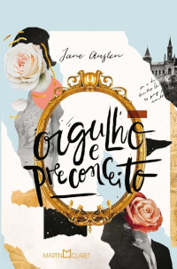

Romance
O Pequeno Príncipe
Antoine de Saint Exupéry

O Livro fala sobre um aviador que voava em seu avião sobre o deserto do Saara, o avião apresenta defeito e ele é obrigado a fazer um pouso de emergência. Ele encontra um menino que mora no Asteróide B612, e inicia com ele uma conversa. Este menino é o Pequeno Príncipe, ele conta que estava viajando por vários outros planetas , e que em cada um deles ele teve muitas experiências. Por fim ele chega a terra e faz uma grande amiga, a Raposa. Viu aqui na terra várias de sua amiga Rosa. Um dos meus diálogos favoritos é quando ele questiona a se a sua Rosa era realmente especial, visto que haviam várias dela. No que a Raposa responde Foi o tempo que dedicaste à tua rosa que a tornou tão importante
. Este livro é um daqueles que você pode ler várias vezes e sempre vai sentir que cada vez viu algo novo e impactante.
Como Eu Era Antes de Você
Jojo Moyes

Esse livro é apaixonante, e me fez derramar muitas lágrimas. Will Trainor é um homem rico e que aproveita a vida como ninguém. Após um acidente ele fica tetraplégico e perde a vontade de viver. Louise Clark é uma mulher cheia de vida e jovem, porém tem sua vida muito limitada por causa da vida financeira da família. Ela é contratada por seis meses para cuidar de Will. Depois de um tempo eles se aproximam bastante e se apaixonam. Louise descobre a causa de o contrato de trabalho ser por seis meses, ela achava que poderia fazer Will desistir de seus planos, mas o amor entre os dois não foi o sufuciente. Existe a adaptação do livro com o mesmo nome, e é Incrível.
A Lista de Brett
Lory Nelson Spielman

Este livro encantador narra a história de Brett que acaba de perder sua mãe que era dona de uma grande empresa. Sua mãe deixa nas mãos de um advogado uma carta com vários desafios para sua filha. Sem ter acesso a sua herança e sem emprego, ela passa a cumprir todos os desafios que sua mãe deixou na carta. Ela descobre então uma nova Brett, apesar de ter passado por vários momentos de conflito. Fez amigos e viveu coisas inimagináveis para ela, e encontrou seu grande amor.
Antes de Partir
Colleen Oakley

Dayse e Jack são recém casados e apaixonados. Dayse que já havia tido um câncer de mama e se recuperado, algum tempo depois, volta mais avançado se multiplicando em várias partes de seu corpo. Seis meses de vida foi o que seu médico disse que ela tinha. Depois dessa notícia ela fica confusa e resolve tentar arrumar uma namorada para o marido. Decisão errada pois acaba criando ciúmes do marido com a mulher que ela encontrou, pois eles já se conheciam. Livro muito profundo que fala de amor, perca e luto.
Não Resisto
Amanda Marques

Lina e Fábio acabam de se separar e ele pede que ela saia do apartamento deles, pois está apaixonado por outra pessoa. Lina devastad sai do apartamento. Ela acaba conhecendo Miguel que também tem uma relação confusa com uma outra pessoa. Lina sofre bastante posi fica dividida entre os sentimentos que tem em relação ao seu ex-marido, e como tudo foi doloroso para ela. Lina e Miguel vivem momentos de grandes emoções com um final muito apropriado, se tornou um dos meus livros preferidos.
Entre o Amor e a Amizade
Bianca Briones

Alexandra acaba de perder o pai, e e stá de luto, precisando do apoio do seu namorado, que não lhe dá apoio nesse momento. Então ela conhece Nicolas, com quem desenvolve uma amizade muito boa e recebe dele o apoio que tanto preisava. Depois de ambos terem terminado seus relacionamentos se veem apaixonados, mas com a dúvida: Será que vai estragar a relação? É linda a amizade deles, e foi construida pouco a pouco, muito bom livro.
Orgulho e Preconceito
Jane Austen
Escrito por Jane Austen, é uma obra que se destaca pela habilidade da autora em retratar a sociedade e os relacionamentos na Inglaterra do século XIX. A história gira em torno de Elizabeth Bennet, uma jovem inteligente e independente, e seu encontro com o reservado e arrogante Sr. Darcy. Inicialmente, suas personalidades opostas e o orgulho mútuo criam um clima de tensão, mas ao longo da trama, ambos são desafiados a questionar suas próprias noções de classe social e preconceito, enquanto o amor gradualmente floresce entre eles. Austen tece uma narrativa rica em ironia e observaçãosocial, onde os diálogos afiados entre os personagensrevelam as complexidades das convenções sociais e aslimitações impostas às mulheres na época. Além do romancecentral, o livro também explora os desafios enfrentadospor outras personagens femininas, como Jane Bennet, irmãmais velha de Elizabeth, oferecendo uma crítica perspicaze atemporal das expectativas sociais e do papel dasmulheres na sociedade.
A Última Carta de Amor
Jojo Moyes

Alterna entre duas linhas do tempo, explorando o impacto duradouro do amor através de diferentes gerações. A história começa com Ellie Haworth, uma jornalista que, em 2003, encontra uma carta de amor esquecida nos arquivos do jornal onde trabalha. Intrigada, ela começa a investigar a história por trás da carta, que revela um romance secreto e proibido na década de 1960 entre Jennifer Stirling, uma mulher presa em um casamento infeliz, e Anthony O’Hare, um correspondente de guerra. À medida que a trama se desenvolve, Ellie percebe que a busca pela verdade por trás daquela história também pode refletir os dilemas de sua própria vida amorosa.
Amor Como Este
Sophie Love

é o primeiro livro da série O Coração de Sunset Harbor. A história acompanha Emily Mitchell, uma jovem que, após o término de um relacionamento de longa data e frustrada com sua vida em Nova York, decide recomeçar em um lugar completamente diferente. Movida por um impulso, ela viaja para a pequena cidade litorânea de Sunset Harbor, no Maine, onde herda uma mansão antiga e deteriorada que pertencia à sua família. Com a decisão de restaurar a propriedade e transformá-la em um bed and breakfast, Emily não só encontra desafios inesperados, mas também descobre um novo sentido para a vida.
A História de Nós Dois
Dani Atikins

Acompanha Emma, uma jovem prestes a se casar com Richard, quando um trágico acidente muda o rumo de sua vida. Após sobreviver a um grave acidente de carro, Emma é resgatada por Jack, um desconhecido que desperta sentimentos inesperados nela. Dividida entre a segurança do relacionamento com Richard e a conexão intensa com Jack, Emma se vê confrontada por uma escolha difícil. À medida que lida com a incerteza e os dilemas do coração, o passado e o presente se entrelaçam, revelando segredos e decisões que vão moldar o futuro de todos. Com uma narrativa emocional, o romance explora os temas de amor, destino e as reviravoltas inesperadas da vida.
O Grande Amor de Helena Brow
B. Diógenes

É um romance que narra a história de Helena, uma jovem talentosa e sonhadora que, após anos dedicando-se à carreira profissional, percebe que algo essencial está faltando em sua vida: o amor. Helena vive em uma grande cidade e enfrenta o dilema de equilibrar seus sonhos pessoais com as pressões e expectativas da sociedade. Sua vida muda quando conhece Arthur, um homem carismático e envolvente que desperta nela sentimentos intensos e um novo olhar sobre o que realmente importa. Entre encontros e desencontros, Helena precisa lidar com o medo de se entregar a um novo relacionamento e as feridas de amores passados. O livro explora as complexidades das relações modernas, a busca pelo amor verdadeiro e o poder de transformar a vida quando se decide seguir o coração.
Nossa Música
Dani Atikins

É um romance comovente que conta a história de Ally e Charlotte, duas mulheres cujas vidas se entrelaçam novamente após anos sem contato, quando são forçadas a confrontar o passado durante uma noite crítica. As duas compartilham uma história complexa, marcada por amor, amizade e rivalidade, especialmente envolvendo o mesmo homem, David, que foi importante na vida de ambas. Quando uma tragédia as coloca juntas em um hospital, as lembranças vêm à tona, revelando segredos, mágoas e decisões que moldaram suas vidas. Alternando entre o passado e o presente, o livro explora temas como redenção, perdão e as reviravoltas inesperadas do destino, questionando até que ponto o amor pode ser eterno e como ele pode impactar diferentes caminhos ao longo da vida.
Dando Um Tempo
Marian Keyes

É um romance que segue a história de Amy, cuja vida vira de cabeça para baixo quando, após anos de casamento, seu marido Hugh anuncia que precisa de "um tempo" – mas não do relacionamento, e sim da vida como um todo. Ele decide tirar seis meses de pausa para viajar, se encontrar e, possivelmente, viver aventuras com outras mulheres. Enquanto Hugh se ausenta, Amy é deixada para lidar com os filhos, a carreira e a confusão emocional causada por essa decisão. Apesar da dor e da raiva, Amy começa a repensar sua própria vida e suas necessidades, explorando o que significa realmente estar em um relacionamento e o que ela espera para o futuro. Com o toque característico de humor e sensibilidade de Keyes, o livro aborda temas de amor, casamento, identidade e os desafios de se redescobrir em meio às incertezas da vida adulta.
Sem Juízo
Emma Chase

É um romance divertido e envolvente que conta a história de Stanton Shaw, um advogado bem-sucedido e carismático do sul dos Estados Unidos, que tem tudo sob controle – ou assim ele pensa. Stanton mantém uma relação à distância com sua namorada da juventude, Jenny, com quem tem uma filha. Mesmo vivendo em diferentes cidades e levando vidas separadas, eles acreditam ter um acordo perfeito. No entanto, quando Jenny anuncia que vai se casar com outro homem, Stanton vê seu mundo desmoronar. Desesperado, ele decide retornar à sua cidade natal, levando junto Sofia, sua colega de trabalho e uma advogada tão brilhante quanto atraente, para ajudá-lo a reconquistar Jenny. Em meio a essa missão, os sentimentos complicados e a química irresistível entre Stanton e Sofia tornam tudo mais caótico e imprevisível. Com humor, diálogos espirituosos e personagens cativantes, o livro explora temas como amor, amizade e as complexidades dos relacionamentos modernos.
Contrato de Amor
Karen Santos

É um romance que segue a clássica premissa de um relacionamento de conveniência que se transforma em algo mais profundo. A trama acompanha a história de Isabela, uma jovem batalhadora que se vê em uma situação financeira difícil e, como solução, aceita a proposta inesperada de um casamento por contrato com Gustavo, um empresário frio e determinado. Para Gustavo, o casamento é uma estratégia para conseguir a herança de sua família, enquanto para Isabela, é uma chance de resolver seus problemas financeiros. No entanto, à medida que o tempo passa e eles são forçados a conviver, os sentimentos começam a se misturar, desafiando os limites estabelecidos pelo acordo. Em meio a conflitos, diálogos afiados e momentos de vulnerabilidade, os dois personagens descobrem que o amor pode surgir nos lugares mais improváveis. O livro aborda temas como confiança, perdão e a transformação do amor ao longo do tempo.
Todas as Suas Imperfeições
Colleen Hoover

É um romance emocionalmente intenso que explora os altos e baixos de um casamento. A história acompanha Quinn e Graham, um casal que parece ter começado com um amor perfeito, mas que ao longo dos anos enfrenta desafios que colocam à prova sua relação. A narrativa alterna entre o passado, mostrando o início apaixonado e cheio de esperança do relacionamento, e o presente, onde o casal lida com frustrações, mágoas e a dor de um problema de infertilidade que abala suas vidas. À medida que a conexão entre eles enfraquece, eles precisam decidir se ainda vale a pena lutar por esse amor ou se é hora de seguir em frente. Com sua escrita envolvente, Colleen Hoover aborda temas como imperfeições, expectativas e o poder da resiliência, trazendo uma história crua e realista sobre o que é necessário para manter um relacionamento vivo.
É Assim que Acaba
Colleen Hoover

É um romance poderoso e emocional que aborda questões profundas sobre amor e relacionamentos. A história segue Lily Bloom, uma jovem mulher que está começando a reconstruir sua vida em Boston após a perda de seu pai e a morte de sua mãe. Lily conhece e se apaixona por Ryle Kincaid, um neurocirurgião bem-sucedido, com quem ela desenvolve um relacionamento intenso. No entanto, à medida que a relação avança, Lily enfrenta conflitos e desafios inesperados, revelando aspectos sombrios que não se encaixam em sua visão romântica do amor. O livro explora temas complexos como violência doméstica, o ciclo do abuso e a força interior necessária para tomar decisões difíceis. A narrativa é inspirada em experiências reais e oferece uma visão honesta e sensível sobre a dificuldade de lidar com relacionamentos abusivos e encontrar a coragem para mudar a própria vida.
Novembro, 9
Colleen Hoover

É um romance que explora a conexão única entre duas pessoas que se encontram de forma inesperada. A história segue Fallon, uma jovem atriz em ascensão que está lidando com as consequências de um incêndio devastador que mudou sua vida, e Ben, um aspirante a escritor. Eles se conhecem em um encontro casual em um dia crucial para Fallon, e a química instantânea entre eles leva a um pacto: se encontrarem no mesmo dia, todo ano, até que Fallon esteja pronta para seguir em frente com sua vida e seus sonhos. Ao longo de quatro anos, os dois personagens enfrentam desafios pessoais e desenvolvem uma relação profunda, mas também são forçados a confrontar segredos e questões não resolvidas. Com sua narrativa envolvente e reviravoltas emocionantes, o livro explora temas de amor, identidade e a importância das escolhas na construção do próprio destino.